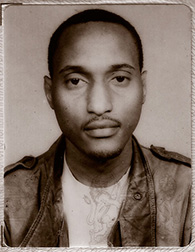

Laurence Mwangi
My Objective
My objective is to obtain certification in Web application development that will expand my knowledge and skills in Web Design.

Education
I am currently enrolled at El Centro college for Web application Development certificate.
Previously I have attended various colleges in pursuit of a good education and also to better my career.
- Dallas County Community College - Dallas, TX.
- Current student
- Austin Community College - Austin, TX.
- Certificate - Printing and Pre-press
- Community College of Allegheny County - Pittsburgh, PA.
- Associate in Science degree - Multimedia Communications
Skills
I am experienced in Desktop Publishing, Computer Graphic Design, HTML5 and CSS3.
I have extensive Mac and PC based network experience in Direct Imaging [DI] Printing, Pre-flighting, Pre-press color separation, trapping, imposition, image-setter output, and file troubleshooting.
I am proficient in usage of current software programs utilized in the industry i.e. Adobe Illustrator CS6, Adobe Photoshop CS6, InDesign CS6, Acrobat Professional, Notepad++/Text Edit/TextWrangler, and in File Management - Back-up/Archiving.
Hobbies
I don't have a whole lot of hobbies, but I do enjoy doing most of the following:
- Playing soccer.
- Listening to music.
- Cooking - mostly oriental cuisine.
- Travelling.
I don't have any pets, but if I had to have one it would be a dog.
Faves
Here are some of my favorite Web Design and HTML5 and CSS3 Tutorial websites:
This is my about me page created for Web Design II class at El Centro College.